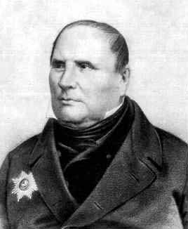
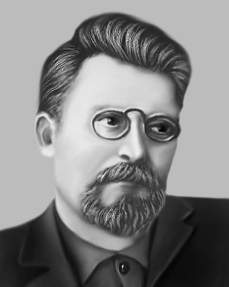
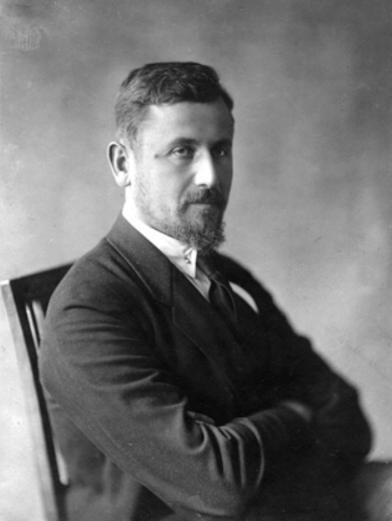
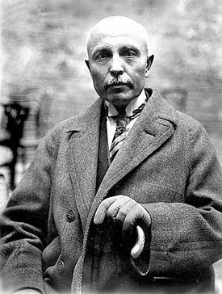
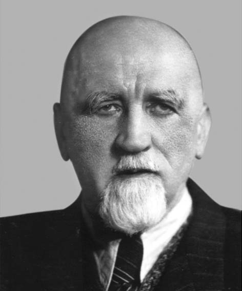
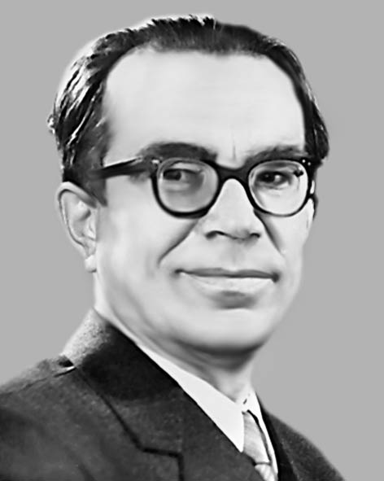
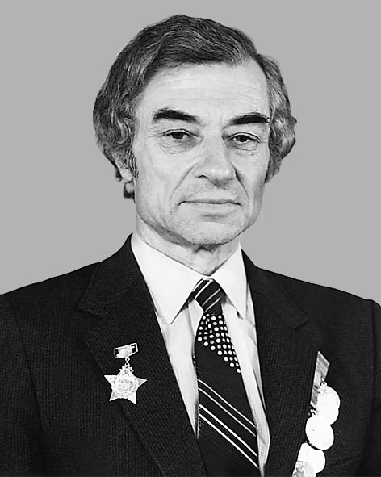
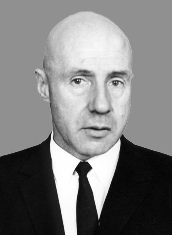
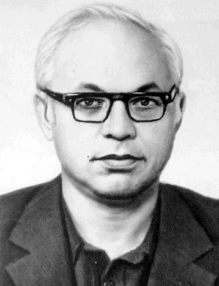
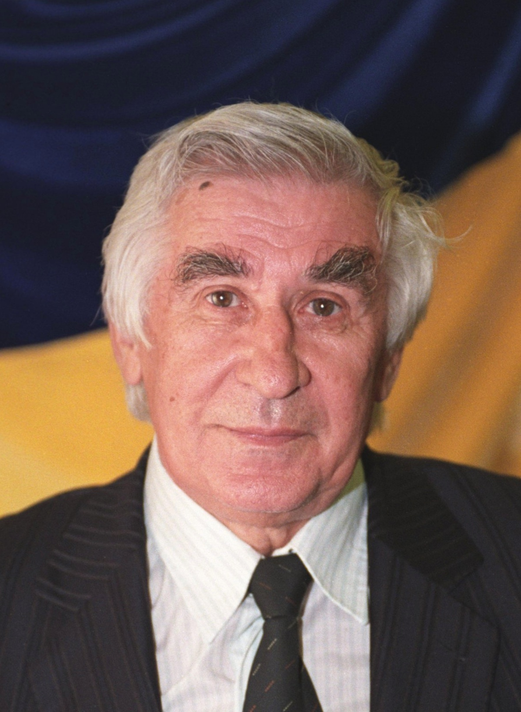

|
|
|  |
Михайло Остроградський
(1801-1862)
Михайлу Остроградському належить одне з найпочесніших місць в історії світової математичної науки. Непересічний талант, сміливий і гострий розум, висока математична ерудиція, знання сучасного природознавства дозволили Михайлу Васильовичу зробити першорядні відкриття в багатьох галузях математики і механіки.
Діапазон наукової творчості Остроградського надзвичайно широкий: диференціальне та інтегральне числення, алгебра, теорія чисел, диференціальна геометрія, теорія ймовірностей, математична фізика, варіаційне числення, аналітична механіка, теорія удару, балістика тощо.
200-річчя з дня народження славетного українського математика за рішенням ЮНЕСКО у 2001р. відзначила міжнародна наукова громадськість.
|
Георгій Феодосійович Вороний
(1868-1908)
Г.Ф. Вороний належить до когорти найвідоміших українських математиків минулого. Визнаний фахівцями як один із найяскравіших талантів у галузі теорії чисел на межі ХІХ-ХХ століть, Г.Ф. Вороний за своє життя встиг надрукувати всього дванадцять статей. Але яких! Вони дали поштовх для розвитку кількох нових напрямків в аналітичній теорії чисел, алгебраїчній теорії чисел, геометрії чисел, які нині активно розвиваються у багатьох країнах.
|
 |
|  |
Михайло Пилипович Кравчук
(1892-1942)
М. Кравчук - автор понад 180 робіт, в тому числі 10 книг із різних розділів математики (алгебра і теорія чисел, теорія функцій дійсної і комплексної змінних, теорія диференціальних та інтегральних рівнянь, теорія ймовірностей і математична статистика, історія математики тощо.) Ці наукові праці увійшли до скарбниці світової науки. Тепер існують на сторінках наукових досліджень многочлени Кравчука, моменти Кравчука, осцилятори Кравчука. А ось від 2001 р., завдяки пошукам Івана Качановського, українського науковця зі США, виявилося, що наукові твори М. Кравчука прислужилися і до винаходу першого в світі електронного комп'ютера!
|
Володимир Йосипович Левицький
(1872-1956)
"Основоположник математичної культури нашого народу", - так сказав про Володимира Левицького академік Михайло Кравчук.
Великою заслугою В. Левицького було те, що він зібрав і впорядкував матеріали з української математичної термінології, що була надрукована в 1903 р.
Основною ділянкою наукової роботи професора В. Левицького була теорія аналітичних функцій. Він займався також геометрією, алгеброю, диференціальними рівняннями та історією математики. Багато уваги приділяв теоретичній фізиці та астрономії.
|
 |
|  |
Мирон Онуфрійович Зарицький
(1889-1961)
У травні 1989 р. громадськість Львова відзначала столітній ювілей видатного українського математика, професора Львівського державного університету Мирона Онуфрійовича Зарицького — одного з фундаторів української математичної культури на західноукраїнських землях, дійсного члена Наукового Товариства ім. Т. Шевченка з 1927р.
Наукові інтереси М. О. Зарицького охоплюють, головним чином, теорію множин з алгеброю логіки та теорію функцій дійсної змінної. Він досліджує похідні множини методами алгебри логіки, виходячи тільки з кількох основних аксіом і не користуючись іншими геометричними міркуваннями. Крім того, М. О. Зарицький займався теорією вимірних перетворень множин, тобто таких гомеоморфних перетворень, які переводять довільну вимірну множину в іншу множину такого ж роду. У зв'язку з цим він також займався деякими теоретико-числовими питаннями і надрукував статтю «Деякі числові послідовності та їх застосування» (1957 p.).
|
Віктор Михайлович Глушков
(1932-1982)
Творчий зліт В.М. Глушкова вражає своєю нестримністю. Його життя вистачило б на кілька життів. Випереджати час Віктор Михайлович умів уже в середній школі. Діапазон його захоплень був надзвичайно широкий: філософія, математика, фізика, література, ботаніка. Він вивчав окремі дисципліни в обсязі вузівських курсів. Заради улюбленої математики в нього вистачило сили відмовитися від улюбленої гри в шахи.
Розв'язав п'яту узагальнену проблему Гільберта, одну з найскладніших в сучасній алгебрі. Важливі результати дістав в теорії цифрових автоматів, в галузі застосувань обчислювальної техніки в керівництві виробничими процесами та економіці. Під його керівництвом були створені універсальні електронно-обчислювальні машини "Київ", "Дніпро", серії машин „Мир” та інші ЕОМ.
|
 |
|  |
Юрій Львович Далецький
(1926-1997)
Юрій Львович Далецький – всесвітньо відомий математик, гордість вітчизняної науки. Основні праці вченого присвячені дослідженню сучасних проблем математичного аналізу, теорії ймовірностей, теорії диференціальних рівнянь і математичної фізики. Ним написано біля 200 наукових праць, серед них значну частину складають ґрунтовні статті та монографії, які перекладено англійською мовою. До скарбниці світової літератури з математики і теоретичної фізики увійшла важлива формула Далецького-Троттера про мультиплікативне представлення еволюційного інтеграла.
За вагомий внесок у розвиток національної освіти академіку НАН України Ю.Л.Далецькому присвоєно почесне звання - Заслужений діяч науки і техніки України.
|
Юрій Олексійович Митропольський
(1917-2008)
Ю.О.Митропольський – дійсний член Національної академії наук України, Російської академії наук; іноземний член заснованої в 1711 році Болонської академії наук (Італія). Ю.О.Митропольський по праву вважався керівником школи з нелінійної механіки, родоначальниками якої в 30-ті роки ХХ сторіччя були академіки М.М.Крилов та М.М.Боголюбов. Він автор більш ніж 750 наукових праць, серед яких 53 монографії, виданих багатьма мовами світу; підготував 100 кандидатів та 25 докторів наук.
Неможливо охопити той величезний внесок у розвиток сучасної науки, що мають ідеї та результати досліджень, які проводив Юрій Олексійович.
За роки своєї майже 60-річної наукової діяльності Ю.О.Митропольський отримав фундаментальні наукові результати в галузі асимптотичних методів нелінійної механіки, якісного аналізу нелінійних систем диференціальних рівнянь при збуреннях, дослідженні коливних процесів у нелінійних системах.
|
 |
|  |
Анатолій Володимирович Скороход
(народився у 1930 р.)
Відомий український математик. Закінчив у 1953 році Київський державний університет, доцент (1956), кандидат фізико-математичних наук (1957), доктор фізико-математичних наук (1962), професор (1964), академік НАН України (1985), член-кореспондент (1967). У 1956—1964 рр. працював у Київському університеті, у 1964—2002 рр. в Інституті математики НАН України, головний науковий співробітник (у 1964—1992 роках завідувач відділу випадкових процесів), водночас професор Київського університету.
Із 1993 року працює на посаді професора Мічиганського університету (США).Член Американської академії мистецтв і наук.
Наукові праці з теорії стохастичних диференціальних рівнянь, граничних теорем для випадкових процесів, розподілів у нескінченновимірних просторах, статистики випадкових процесів, марковських процесів.
Державна премія України в галузі науки і техніки (1982, 2003). Премія імені М. М. Крилова НАН України (1970). Срібна медаль ім. М. В. Остроградського (2001).
Автор понад 450 наукових праць, серед яких понад 40 монографій і підручників.
|
Анатолій Михайлович Самойленко
(народився в 1938р.)
У 1963–1974 рр. і з 1987 р. А.М.Самойленко працює в Інституті математики НАН України (з 1987 р. – завідувач відділу звичайних диференціальних рівнянь, з 1988 – директор інституту). Одночасно з 1967 р. – у Київському університеті (з 1974 – завідувач кафедри) та з 1998 – завідувач кафедри диференціальних рівнянь Національного технічного університету України “КПІ”.
Перші наукові праці вченого з’явились у 1961 р. За короткий час А.М.Самойленко став одним із провідних фахівців з якісної теорії звичайних диференціальних рівнянь і теорії нелінійних коливань. Спираючись на класичні досягнення попередників, він провів оригінальні й глибокі дослідження і побудував теорію збурення інваріантних тороїдальних багатовидів динамічних систем, створив нові та розвинув відомі асимптотичні методи нелінійної механіки, розробив теорію багаточастотних коливань. Його досягнення у створенні нових напрямів дослідження знайшли міжнародне визнання. У світовій математичній літературі з’явились терміни “функція Гріна-Самойленка”, “чисельно-аналітичний метод Самойленка” та ін.. А.М.Самойленко – автор близько 400 наукових праць, у тому числі 30 монографій і 15 навчальних посібників. Багато його праць перекладено іноземними мовами і видано за кордоном.
|
 |
|